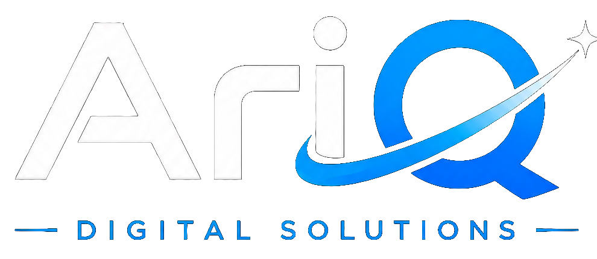

Android Business Apps
Apps for sales, stock, field service, deliveries, inspections, bookings, and internal operations.

Get StartedBusiness Apps That Work Anywhere
Mobile and Android applications built around real business needs, including offline workflows, POS devices, field teams, and customer services.
What We Provide
From consultation to delivery and after-sales support, AriQ keeps the process clear and practical.
Apps for sales, stock, field service, deliveries, inspections, bookings, and internal operations.
Interfaces designed for compact POS devices, barcode workflows, receipt printing, and cashier-friendly use.
Continue working during connectivity interruptions and synchronise securely when internet access returns.
Connect apps to databases, web dashboards, payment workflows, reporting tools, and business APIs.
Our Process
We document users, screens, permissions, workflows, reports, devices, and integrations.
We build the key workflow first, test it with real users, then complete the remaining modules.
We prepare the installable application, configure devices, train users, and provide support.
Talk To AriQ
Send us your requirements and location. We will recommend the most suitable solution and provide a clear quotation.